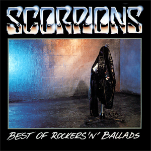
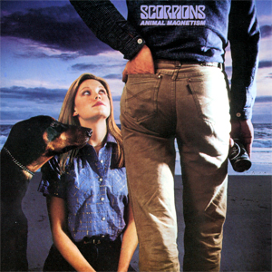

Members:
- Klaus Meine
- Rudolf Schenker
- Matthias Jabs
- Francis Buchholz
- Herman Rarebell
Scorpions are a German hard rock band formed in Hanover in 1965 by guitarist Rudolf Schenker. The lineup from 1978 to 1992 was the most successful incarnation of the group, and included Klaus Meine (vocals), Rudolf Schenker (rhythm guitar), Matthias Jabs (lead guitar), Francis Buchholz (bass), and Herman Rarebell (drums). The band's only continuous member has been Schenker, although Meine has appeared on all of Scorpions' studio albums, while Jabs has been a consistent member since 1978, and bassist Paweł Mąciwoda and drummer Mikkey Dee have been in the band since 2003 and 2016 respectively. Scorpions have released 19 studio albums, six live albums, 13 video albums, 29 compilation albums, one cover album, 92 singles and 43 music videos and have sold over 110,000,000 albums worldwide. The best-selling album by Scorpions is CRAZY WORLD, which sold over 3,612,363 copies.
| Album name | CRAZY WORLD (1990) | LOVE AT FIRST STING (1984) | SAVAGE AMUSEMENT (1988) | WORLD WIDE LIVE (1985) | BEST OF ROCKERS 'N' BALLADS (1989) | BLACKOUT (1982) | ANIMAL MAGNETISM (1980) | LOVEDRIVE (1979) | ACOUSTICA (2001) |
|---|---|---|---|---|---|---|---|---|---|
| Sold copies | 3,612,363 | 3,477,110 | 1,599,439 | 1,574,290 | 1,350,000 | 1,212,920 | 1,050,000 | 853,000 | 222,261 |
| Album covers | |
|
|
|
 | |
 | |
|